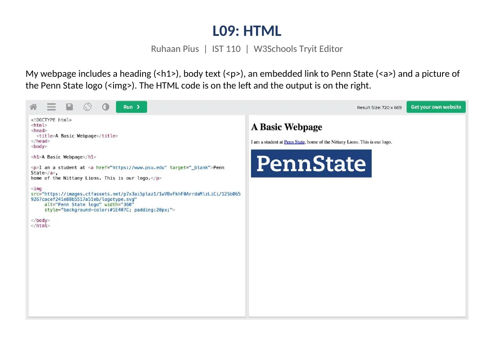

L09 HTML basics
The task
Use the W3Schools Tryit editor to build a basic web page with a heading, some body text, a link and a picture.
What I made
A page with a heading, a paragraph about Penn State, a link to Penn State's website and the Penn State logo, with the code on the left and the result on the right. Every page of this site is built from the same four kinds of tag, plus a few more.

Download the original (PDF, 1 page, 90 KB)
Reflection
A practice page is a single file. A whole site needs navigation, the same styling on every page, a folder structure, hosting and upkeep. Seeing this portfolio built showed me that most of the work is in the structure, not the tags.
The four tags from this exercise, a heading, a paragraph, a link and an image, are still the building blocks of every page here.